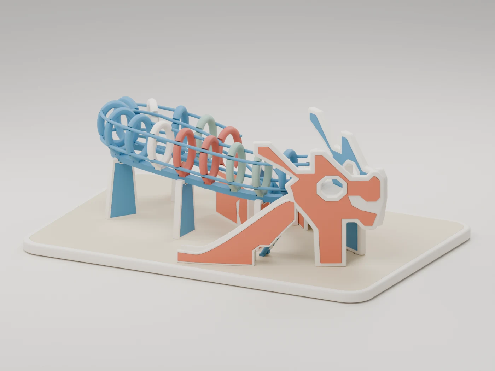
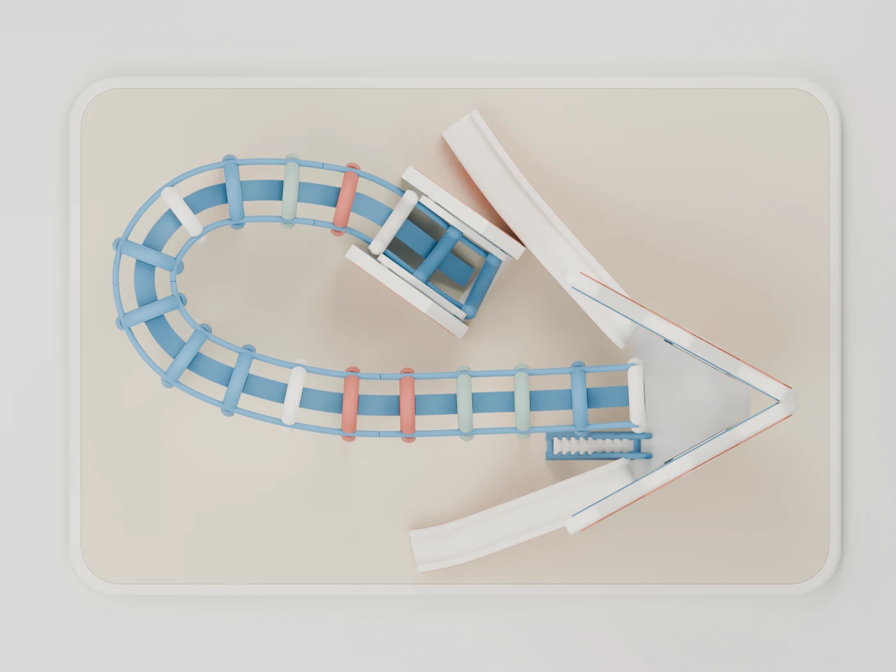
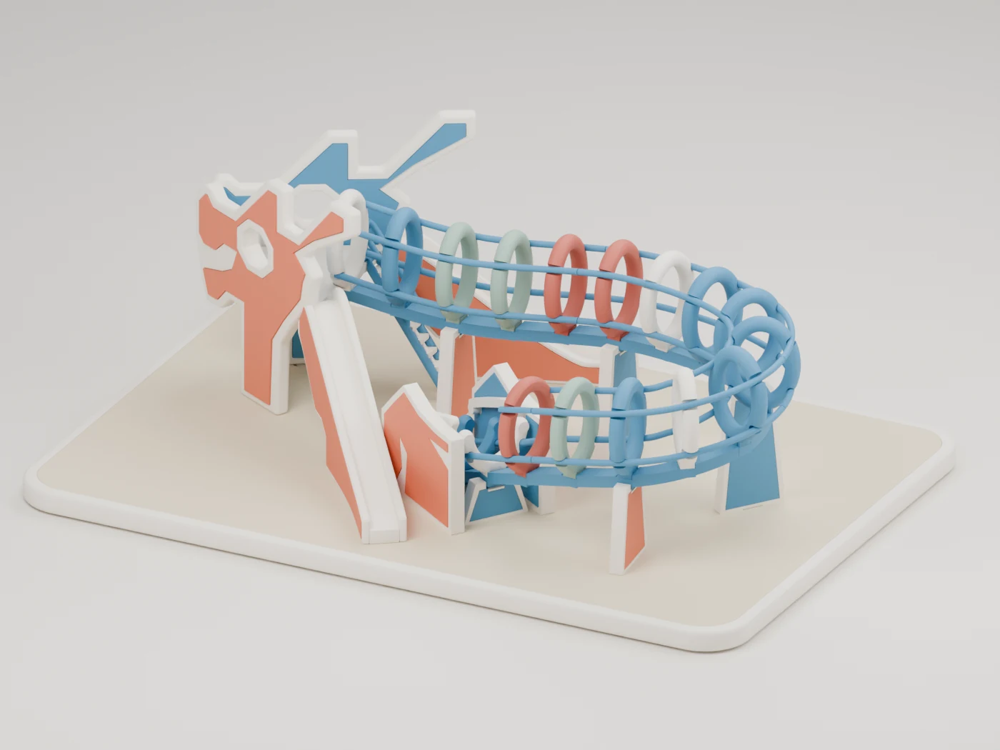
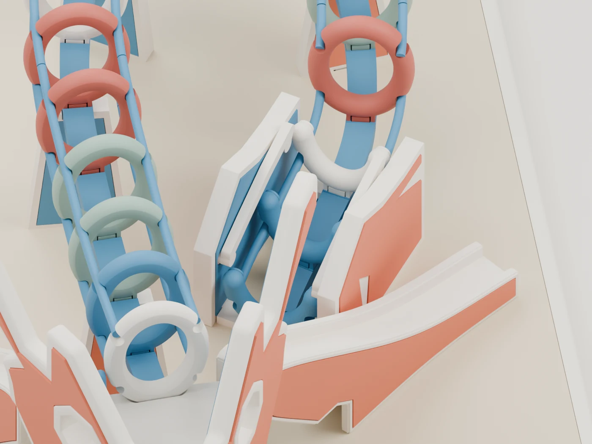

The head & slides
Orange inlays sit inside cream outlines. Two sculpted slides descend from the head platform.
Singapore playground / A miniature interpretation

From playground to print bed
The bold head. The winding walkway. The loops all the way round. A stylized, 3D-printable model inspired by the Toa Payoh Dragon Playground.
Rounded hoops and separate colour inserts give this miniature its own character.
Explore the v03 print kitPRINT CANDIDATE
Physical printing and fit are untested.
15 + 3closed hoops + open tail rungs
94production parts
06separate print colours
A digital model.
Your next hands-on project.
01 / MODEL NOTES
A curling path, an unmistakable head, and a rhythm of coloured ribs. The silhouette takes its cue from the original; the miniature is a stylized interpretation.

Orange inlays sit inside cream outlines. Two sculpted slides descend from the head platform.
Fifteen puffy closed hoops follow the curved blue rails. Three low open rungs finish the tail.
Cream, orange, blue, sage, red and sand. Print the colours separately, then assemble with glue. No AMS required.


All four images show the actual v03 digital model. They do not establish physical print quality, joint fit or support removal.
02 / PRINT & ASSEMBLE
The v03 kit is ready for physical fit testing. Try the representative joints before committing to the full model.
19 packed layouts in total
12 model plates
v03 / FIT-TEST CANDIDATE
Individual and packed STL files, fit samples, optional cradles, assembly guides, previews and digital validation evidence.
Download v03 print kitThe original design is shared under CC BY-NC-SA 4.0: give credit, keep use noncommercial, note changes and share adaptations under the same license. License scope & attribution.
This original ZIP predates the notice. Save the accompanying license and scope notice with your download.
03 / CONTINUE EXPLORING